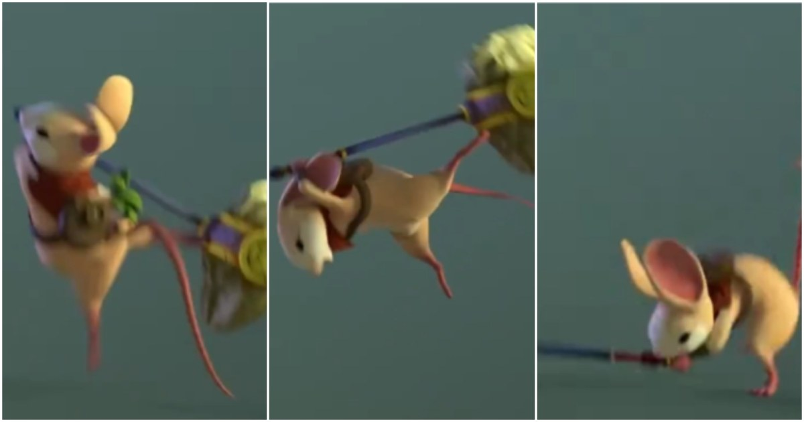

01
《Moss: Book II》角色動畫拆解：小體型角色揮舞巨型雙手武器的 Silhouette
Laura Lico 以《Moss: Book II》的角色動畫為例，說明小體型角色操作巨型雙手武器時，如何用清楚、可讀的動作 Silhouette 維持姿勢辨識。

動畫 ★★★★★
完整分析
技術／流程變更
這篇 Breakdown 的核心不是單純把武器做得更大，而是讓角色與武器在動態中仍形成清楚的輪廓。來源明確把 strong、readable silhouettes 放在重點，可作為大型武器動作設計時的 Pose 與輪廓檢查參考。
Production 影響
對角色動畫 Production 的價值在於：重量感之外，鏡頭實際看到的姿勢是否一眼可辨也很重要。這類案例適合拿來檢查攻擊起手、蓄力、揮擊與收招時，角色軀幹、手臂和武器是否互相遮蔽。
導入測試與限制
目前公開證據集中在單一動畫 Breakdown，沒有完整 Rig、曲線或遊戲內鏡頭資料；導入時應用自己的角色比例、武器尺寸與實際 Camera 做 Pose readability 測試。
BRIEF｜來源已驗證；證據深度較有限，完整分析會明確區分已知資訊與待驗證事項。